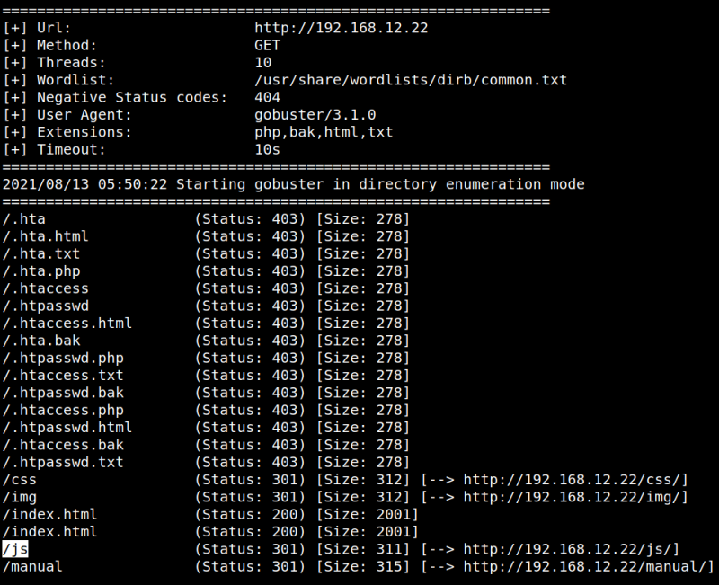
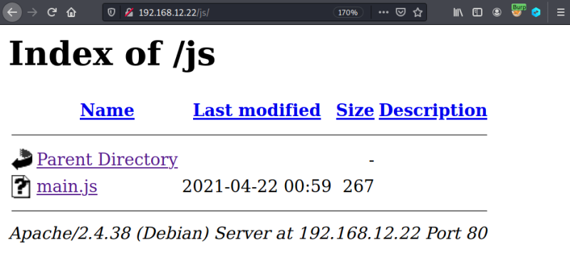
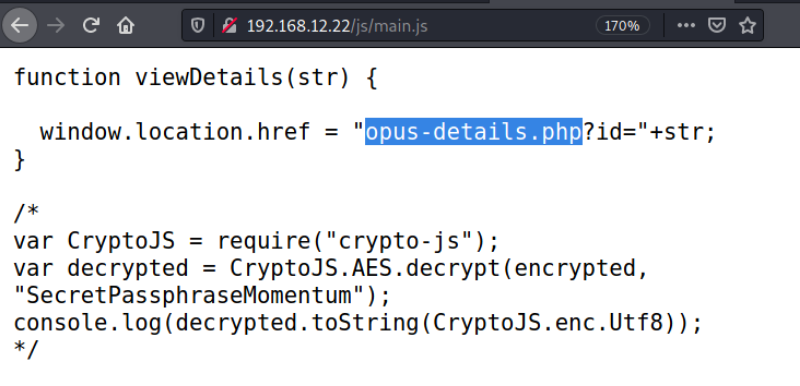
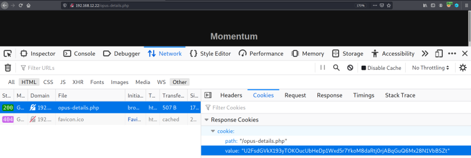

3.1 Files and directories
If you visit the 192.168.12.22 URL you got nothing interesting.
1. Enumerate information about the directories.
$gobuster dir -u http://192.168.12.22 -x html,txt,php,bak --wordlist=/usr/share/wordlists/dirb/common.txt
Output:

We got a directory “/js”.
3. Open in your browser the “js” directory.

There's a file called “main.js”.
4. Open the file on your browser.

You have this
opus-details.php file with a parameter id.5. Visit the file
opus-details.php on your browser. http://192.168.12.22/opus-details.php.6. Open the “Dev. Tools” on your browser, go to the “Network” tab and click on the “Reload” button.

There's a cookie and it seems something encrypted.